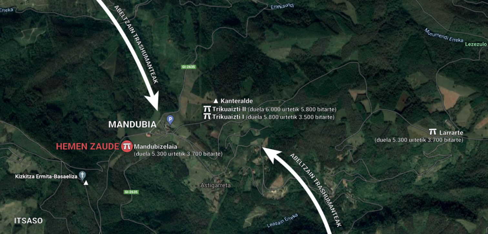
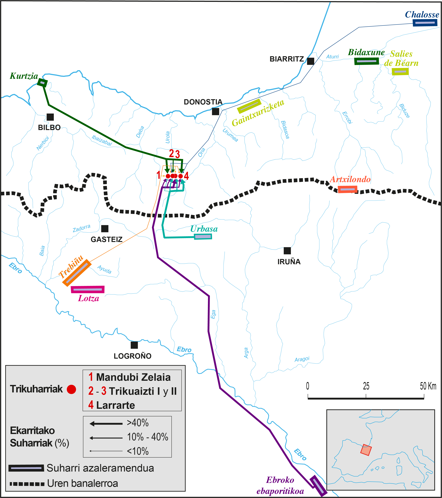

Trikuharri gehienak mendi aldean kokatzen dira eta horrek pentsarazten du hor bizi ziren giza-taldeak abeltzain trashumanteak izango zirela. Neguan ez ziren bertan biziko, Neolitotik aurrera nekazaritzatik eta abelazkuntzatik bizi ziren euren jatorriko herrixketara itzuliko ziren.

Tresna gehienak suharriz egiten ziren eta arrunta ez denez, non agertzen den ikertu da: Flysch (Kurtzia–Barrika), Gaintxurizketa, Urbasa (Mugarduia), Trebiño (Araiko), Ebroko Ebaporitikoa (Tudela), Baiona inguruetan...
Abeltzainak transhumantzian zetozenez euren eskualdean erabiltzen zituzten suharriak ekarriko zituzten, batez ere hurbilenekoak. Mandubizelaian berriz ugarienak Flyschekoak dira, kostaldekoak. Urbasa (hurbilenekoa Mandubitik), Ebaporitiko eta Trebiñukoak proportzio txikiagoan agertzen dira, baina inguru horietakoekin bazituzten harremanak.
Suharrien jatorrien mapa. A. Tarriño doktoreak egina (UPV/EHU)